Tree Detection from Point Clouds over the Canton of Geneva ¶
Alessandro Cerioni (Canton of Geneva) - Flann Chambers (University of Geneva) - Gilles Gay des Combes (CJBG - City of Geneva and University of Geneva) - Adrian Meyer (FHNW) - Roxane Pott (swisstopo)
Proposed by the Canton of Geneva - PROJ-TREEDET
May 2021 to March 2022 - Published on April 22, 2022
Abstract: Trees are essential assets, in urban context among others. Since several years, the Canton of Geneva maintains a digital inventory of isolated (or "urban") trees. This project aimed at designing a methodology to automatically update Geneva's tree inventory, using high-density LiDAR data and off-the-shelf software. Eventually, only the sub-task of detecting and geolocating trees was explored. Comparisons against ground truth data show that the task can be more or less tricky depending on how sparse or dense trees are. In mixed contexts, we managed to reach an accuracy of around 60%, which unfortunately is not high enough to foresee a fully unsupervised process. Still, as discussed in the concluding section there may be room for improvement.

1. Introduction¶
1.1 Context¶
Human societies benefits from the presence of trees in cities and their surroundings. More specifically, as far as urban contexts are concerned, trees deliver many ecosystem services such as:
- the reduction of heat islands, by shading and cooling their direct environment;
- the mitigation of flood risks, by intercepting precipitation through their foliage and increasing soil infiltration;
- the reduction of atmospheric pollution;
- the reduction of noise pollution;
- a positive contribution to the physical, mental and social health of the population.
Moreover, they play an important role of support of the biodiversity by offering resources and shelter to numerous animal, plant and fungus species.
The quality and quantity of such benefits depend on various parameters, such as the height, the age, the leaf area, the species diversity within a given population of trees. Therefore, the preservation and the development of a healthy and functional tree population is one of the key elements of those public policies which aim at increasing resilience against climate change.
For these reasons, the Canton of Geneva has set the ambitious goal of increasing its canopy cover (= ratio between the area covered by foliage and the total area) from 21% (as estimated in 2019) to 30% by 2050. In order to reach this goal, the concerned authorities (i.e. the Office cantonal de l’agriculture et de la nature) need detailed data and tools to keep track of the cantonal tree population and drive its development.
The Inventaire Cantonal des Arbres Isolés (ICA) is the most extensive and detailed source of data on isolated trees (= trees that do not grow in forests) within the Canton of Geneva. Such dataset is maintained by a joint effort of several public administrations (green spaces departments of various municipalities, the Office cantonal de l’agriculture et de la nature, the Geneva Conservatory and Botanical Garden, etc.). For each tree, several attributes are provided: geographical coordinates, species, height, plantation date, trunk diameter, crown diameter, etc.
To date, the ICA includes data about more than 237 000 trees. However, it comes with a host of known limitations:
- only the public domain is covered (no records about trees which are found within private properties); moreover, the coverage of the public domain is partial (business experts estimate that half of the actual trees are missing).
- The freshness of data is not consistent among the various records, as it relies on sporadic ground surveys and manual updates. Trees tagged as "historical" lack precision in terms of geolocation and taxonomical information.
In light of Geneva's ambitions in terms of the canopy growth, the latter observations call for the need of a more efficient methodology to improve the exhaustivity and veracity of the ICA. Over the last few years, several joint projects of the Canton, the City and the University of Geneva explored the potential of using LiDAR point clouds and tailored software to characterize trees in a semi-automatic way, following practices that are already established in forestry. Yet, forest and urban settings are quite different from each other: forests exhibit higher tree density, which can hinder tree detection; forests exhibit lower heterogeneity in terms of species and morphology, which can facilitate tree detection. Hence, the task of automatic detection is likely to be harder in urban contexts than in forests.
The study reported in this page, proposed by the Office cantonal de l’agriculture et de la nature (OCAN) and carried out by the STDL, represents a further yet modest step ahead towards the semi-automatic digitalisation of urban trees.
1.2 Objectives¶
The objectives of this project was fixed by the OCAN domain experts and, in one sentence, amount to designing a robust and reproducible semi-automatic methodology allowing one to "know everything" about each and every isolated tree of the Canton of Geneva, which means:
- detecting all the trees (exhaustivity);
- geolocating the trunk and the top of every tree;
- measuring all the properties of every tree: height, trunk and crown diameter, canopy area and volume;
- identify species.
Regarding quality, the following requirements were fixed:
| Property | Expected precision |
|---|---|
| Trunk geolocation | 1 m |
| Top geolocation | 1 m |
| Height | 2 m |
| Trunk diameter at 1m height | 10 cm |
| Crown diameter | 1 m |
| Canopy area | 1 m² |
| Canopy volume | 1 m³ |
In spite of such thorough and ambitious objectives, the time span of this project was not long enough to address them all. As a matter of fact, the STDL team only managed to tackle the tree detection and trunk geolocation.
1.3 Methodology¶
As shown in Figure 1.1 here below, algorithms and software exist, which can detect individual trees from point clouds.
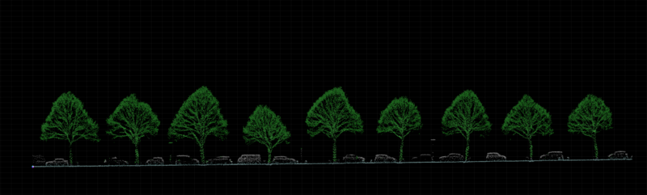
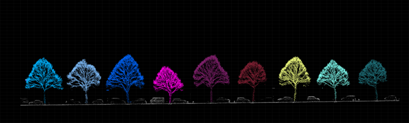
Figure 1.1: The two panels represent a sample of a point cloud before (top panel) and after (bottom) tree detection.
Not only such tools take point cloud as input data, but also the values of a bunch of parameters have to be chosen by users. The quality of results depend both on input data and on input parameters. The application of some pre-processing to the input point cloud have an impact, too. Therefore, it becomes clear that in order to find the optimal configuration for a given context, one should be able to measure the quality of results as a function of the chosen parameters as well as of the pre-processing operations. To this end, the STDL team called for the acquisition of ground truth data. Further details about input data (point cloud and ground truth), software and methodology will be provided shortly.
1.4 Input data¶
1.4.1 LiDAR data¶
A high-density point cloud dataset was produced by the Flotron Ingenieure company, through Airborne Laser Scanning (ALS, also commonly known by the acronym LiDAR - Light Detection And Ranging). Thanks to a lateral overlap of flight lines of ~80%, more than 200 pts/m² were collected, quite a high density when compared to more conventional acquisitions (30 – 40 pts/m²). Flotron Ingenieure took care of the point cloud classification, too.
The following table summarizes the main features of the dataset:
| LIDAR 2021 - OCAN, Flotron Ingenieure | |
|---|---|
| Coverage | Municipalities of Chêne-Bourg and Thonêx (GE) |
| Date of acquisition | March 10, 2021 |
| Density | > 200 pts/m² |
| Planimetric precision | 20 mm |
| Altimetric precision | 50 mm |
| Tiles | 200 tiles of 200 m x 200 m |
| Format | LAS 1.2 |
| Classes | 0 - Unclassified |
| 2 - Ground | |
| 4 - Medium vegetation (0.5 - 3m) | |
| 5 - High vegetation (> 3m) | |
| 6 - Building | |
| 7 - Low points | |
| 10 - Error points | |
| 13 - Bridges | |
| 16 - Noise / Vegetation < 0.5m |
Figs. 1.2 and 1.3 represent the coverage of the dataset and a sample, respectively.
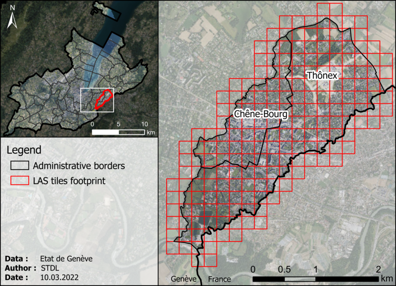
Figure 1.2: Coverage and tiling of the 2021 high-density point cloud dataset.
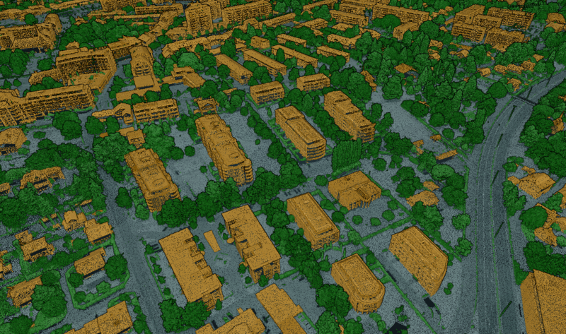
Figure 1.3: A sample of the 2021 high-density point cloud. Colors correspond to different classes: green = vegetation (classes 4 and 5), orange = buildings (class 6), grey = ground or unclassified points (class 2 and 0, respectively).
1.4.2 Test sectors and ground truth data¶
In order to be able to assess the exhaustivity and quality of our results, we needed reference (or "ground truth") data to compare with. Following the advice of domain experts, it was decided to acquire ground truth data regarding trees within three test sectors, which represent three different types of contexts: [1] alignment of trees, [2] park, [3] a mix of [1] and [2]. Of course, these types can also be found elsewhere within the Canton of Geneva.
Ground truth data was acquired through surveys conducted by geometers, who recorded
- the (x, y) coordinates of the trunk at 1 m above the ground;
- the trunk diameter at 1 m above the ground,
for every tree having a trunk diameter larger than 10 cm.
Details about the three test sectors are provided in the following, where statistics on species, height, age and crown diameter stem from the ICA.
Avenue de Bel-Air (Chêne-Bourg, GE)¶
| Property | Value |
|---|---|
| Type | Alignment of trees |
| Trees | 135 individuals |
| Species | monospecific (Tilia tomentosa) |
| Height range | 6 - 15 m |
| Age range | 17 - 28 yo |
| Crown diameters | 3 - 10 m |
| Comments | Well separated trees, heights and morphologies are relatively homogenous, no underlying vegetation (bushes) around the trunks. |
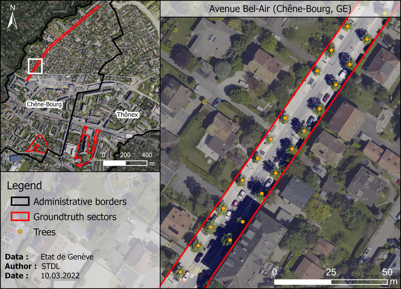
Figure 1.4: "Avenue de Bel-Air" test sector in Chêne-Bourg (GE). Orange dots represents ground truth trees as recorded by geometers.
Parc Floraire (Chêne-Bourg, GE)¶
| Property | Value |
|---|---|
| Type | Park with ornemental trees |
| Trees | 95 individuals |
| Species | 65 species |
| Height range | 1.5 - 28 m |
| Age range | Unknown |
| Crown diameters | 1 - 23 m |
| Comments | Many ornemental species of all sizes and shapes, most of them not well separated. Very heterogenous vegetation structure. |
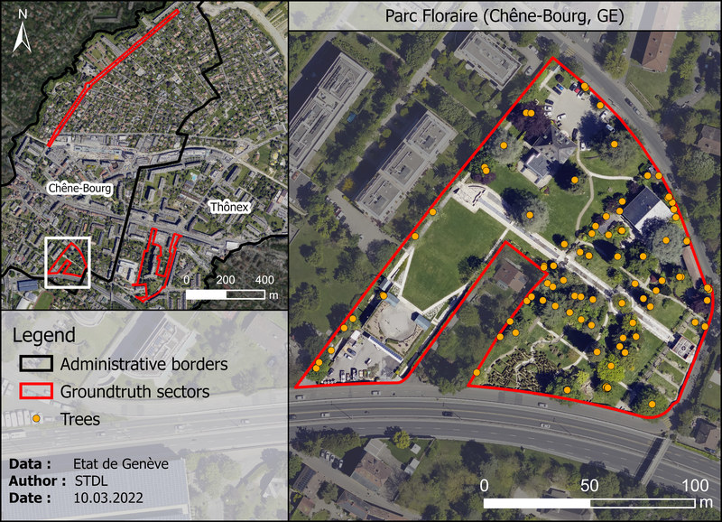
Figure 1.5: "Parc Floraire" test sector in Chêne-Bourg (GE). Orange dots represents ground truth trees as recorded by geometers.
Adrien-Jeandin (Thônex, GE)¶
| Property | Value |
|---|---|
| Type | Mixed (park, alignment of tree, tree hedges, etc.) |
| Trees | 362 individuals |
| Species | 43 species |
| Height range | 1 - 34 m |
| Age range | Unknown |
| Crown diameters | 1 - 21 m |
| Comments | Mix of different vegetation structures, such as homogenous tree alignments, dense tree hedges and park with a lot of underlying vegetation under big trees. |

Figure 1.6: "Adrien-Jeandin" test sector in Thonêx (GE). Orange dots represents ground truth trees as recorded by the geometers.
1.5 Off-the-shelf software¶
Two off-the-shelf software products were used to detect trees from LiDAR data, namely TerraScan and the Digital Forestry Toolbox (DFT). The following table summarizes the main similarities and differences between the two:
| Feature | Terrascan | DFT |
|---|---|---|
| Licence | Proprietary (*) | Open Source (GPL-3.0) |
| Price | See here | Free |
| Standalone | No: requires MicroStation or Spatix | No: requires Octave or MATLAB |
| Graphical User Interface | Yes | No |
| In-app point cloud visualization | Yes (via MicroStation or Spatix) | No (**) |
| Scriptable | Partly (via macros) | Yes |
| Hackable | No | Yes |
(*) Unfortunately, we must acknowledge that using network licenses turned out to be quite problematic. Weeks of unexpected downtime were experienced, due to puzzling issues related to the interplay between the self-hosted license server, firewalls, VPN and end-devices. (**) We used the excellent Potree Free and Open Source software for visualization.
The following sections are devoted to brief descriptions of these two tools; further details will be provided in Section 4 and Section 5.
1.5.1 Terrascan¶
Terrascan is a proprietary software, developed and commercialized by Terrasolid, a MicroStation and Spatix plugin which is capable of performing several tasks on point clouds, including visualisation, classification. As far as tree detection is concerned, Terrascan offers multiple options to
- manually, semi- or fully-automatically detect and segment trees in point clouds;
- estimate the value of a host of properties (height, trunk diameter, etc.).
Two methods are provided to group (one may also say "to segment") points into individual trees:
- the so-called "highest point" (aka "watershed") method, suitable for airborne point clouds.
- the so-called "trunk" method, which requires a high amount of points from trunks and hence is suitable for very high-density airborne point clouds, for mobile data and point clouds from static scanners.
For further details on these two methods, we refer the reader to the official documentation.
1.5.2 Digital Forestry Toolbox (DFT)¶
The Digital Forestry Toolbox (DFT) is a
collection of tools and tutorials for Matlab/Octave designed to help process and analyze remote sensing data related to forests (source: official website)
developed and maintained by Matthew Parkan, released under an Open Source license (GPL-3.0).
The DFT implements algorithms allowing one to perform
- tree top detection, via a marker-controlled watershed segmentation (cf. this tutorial);
- stem detection (cf. this other tutorial).
We refer the reader to the official documentation for further information.
2. Method¶
As already stated, in spite of the thorough and ambitious objectives of this project (cf. here), only the
- tree detection and
- trunk geolocation
sub-tasks could be tackled given the resources (time, humans) which were allocated to the STDL.
The method we followed goes through several steps,
- pre-processing,
- running Terrascan or DFT,
- post-processing,
which are documented here-below.
2.1 Pre-processing: point cloud reclassification and cleaning¶
[1] In some cases, points corresponding to trunks may be misclassified and lay in class 0 – Unclassified instead of class 4 – Medium vegetation. As the segmentation process only takes vegetation classes (namely classes 4 and 5) into account, the lack of trunk points can make some trees "invisibles".
[2] We suspected that the standard classification of vegetation in LiDAR point clouds could be too basic for the task at hand. Indeed, vegetation points found at less (more) than 3 m above the ground are classified as 4 – Medium Vegetation (5 – High Vegetation). This may cause one potential issue: all the points of a given tree that are located at up to 3 meters above the ground (think about the trunk!) belong to a class (namely class no. 4) which can also be populated by bushes and hedges. The "contamination" by bushes and hedges may spoil the segmentation process, especially in situations where dense low vegetation exists around higher trees. Indeed, it was acknowledged that in such situations the segmentation algorithm fails to properly identify trunk locations and distinguish one tree from another.
Issues [1] and [2] can be solved or at least mitigated by reclassifying and cleaning the input point cloud, respectively. Figures 2.1 and 2.2 show how tree grouping (or "segmentation") yields better results if pre-processed pointclouds are used.
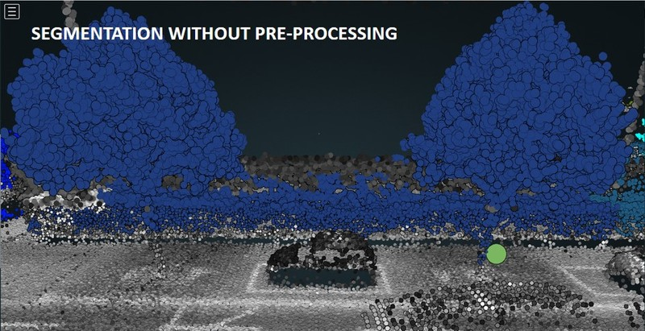
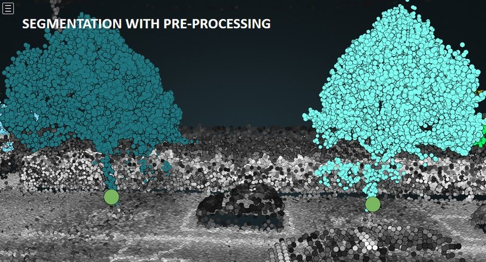
Figure 2.1: Tree grouping (or "segmentation") applied to the original (top panel) vs pre-processed (bottom) point cloud. Without pre-processing, two trees connected by a hedge are segmented as one single individual. Therefore, only one detection is made (green circle slightly above the ground). With pre-processing, we get rid of the hedge and recover the lowest trunk points belonging to the tree on the left. Eventually, both trees are properly segmented and we end up having two detections (green circles).
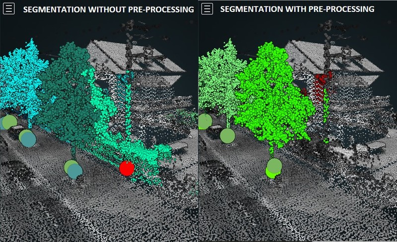
Figure 2.2: Tree grouping (or "segmentation") applied to the original (left panel) vs reclassified (right) point cloud. Without pre-processing, segmentation yields a spurious detection (= false positive, red circle slightly above the ground), resulting from the combination of a pole and a hedge. With pre-processing, we get rid of most of the points belonging to the hedge and the pole; no false positive shows up.
2.1.1 Reclassification with Terrascan and FME Desktop¶
The reclassification step aims at recovering trunk points which might be misclassified and hence found in some class other than class 4 – Medium Vegetation (e.g. class 0 - Unclassified). It was carried out with Terrascan using the Classify by normal vectors tool, which
- identifies linear features generated by groups of class 0 and 4 points;
- moves the concerned points to an empty class (here: class 10).
Finally, during the cleaning process with FME Desktop (cf. Chapter 2.1.2 here below), these points are reclassified in class 4.
The outcome of this reclassification step is shown in Figure 2.3.
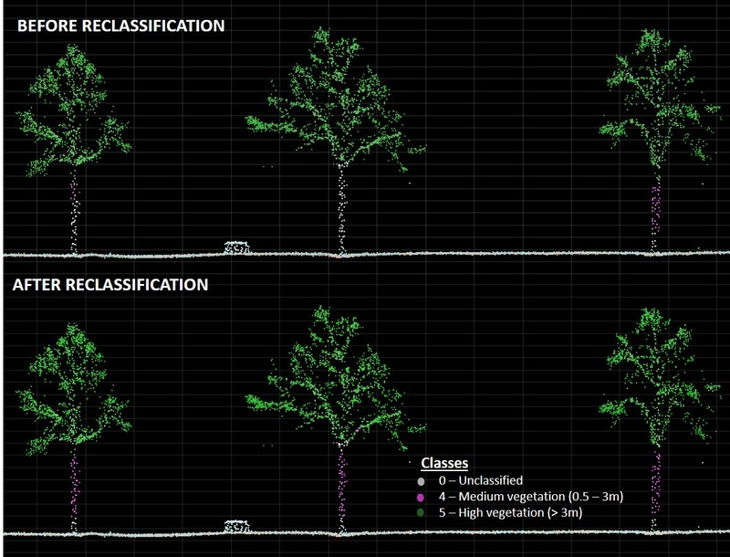
Figure 2.3: Outcome of reclassification. In the upper picture, the trunk of the tree on the left is partially misclassified, while the trunk of the tree in the middle is completely misclassified. After reclassification, almost all the points belonging to trunks are back in class 4.
Let us note that the reclassification process may also recover some unwanted objects enjoying linear features similar to trees (poles, power lines, etc.). However, such spurious objects can at least partly filtered out by cleaning step described here below.
2.1.2 Cleaning point clouds with FME Desktop¶
The cleaning step aims to filter as many "non-trunk" points as possible out of class 4 – Medium Vegetation, in order to isolate trees from other types of vegetation. Vegetation is considered as part of a tree if higher than 3 m.
Cleaning consists in two steps:
- Every point of class 4 which is NOT vertically covered by any class 5 point (i.e. any class 4 point which is not under a tree) is moved to another class. This filters out an important part of bushes and hedges. Only those bushes and hedges which are actually under a tree remain in class 4.
- Every point of class 4 which is located above a wall is moved to another class. Actually, it was noticed that many hedges were located on or against walls. This filters out some additional "hedge points", which may escape the first cleaning step if found straight under a tree.
Note that in case the point cloud is reclassified in order to recover missing trunks, the cleaning step also allow to get rid of unwanted linear objects (poles, electric lines, etc) that have been recovered during the reclassification. The class containing reclassified points (class 10) will simply be process together with class 4 and receive the same treatment. Eventually, reclassified points that are kept (discarded) by the cleaning process will be integrated in class 4 (3).
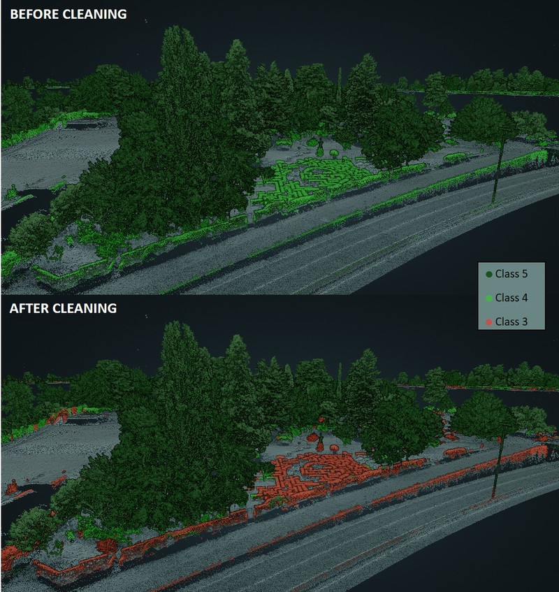
Figure 2.4: Outcome of the cleaning process. Red points correspond to the "cleaned" points that were moved to class 3.
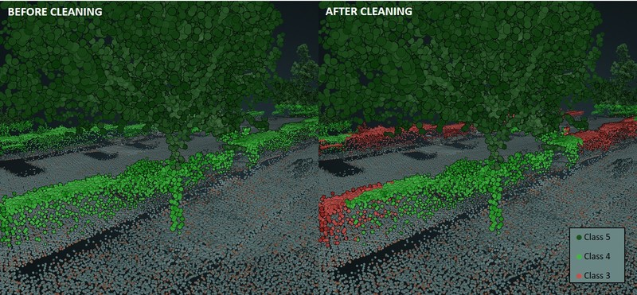
Figure 2.5: Outcome of the cleaning process. Red points correspond to the "cleaned" points that were moved to class 3. Hedges under trees escape the cleaning.
2.1.3 FME files and documentation of pre-processing steps¶
More detailed information about the reclassification and cleaning of the point cloud can be found here.
FME files can be downloaded by following these links:
- FME Workbench File (requires a Canopy Cover Layer)
- Alternative FME Workbench File (does not require a Canopy Cover Layer
Further information on the generation of a Canopy Cover Layer can be found here.
2.2 Running Terrascan¶
Terrascan offers multiple ways to detect trees from point clouds. In this project, we focused on the fully automatic segmentation, which is available through the "Assign Groups" command.
As already said (cf. here), two methods are available: highest point (aka "watershed") method and trunk method. In what follows, we introduce the reader to the various parameters that are involved in such methods.
2.2.1 Watershed method parameters¶
Group planar surfaces¶
Quoting the official documentation,
If on, points that fit to planes are grouped. Points fitting to the same plane get the same group number.
Min height¶
This parameter defines a minimum threshold on the distance from the ground that the highest of a group of points must have, in order for the group to be considered as a tree. The default value is 4 meters. The Inventaire Cantonal des Arbres Isolés includes trees which are at least 3 m high. This parameter ranged from 2 to 6 m in our tests.
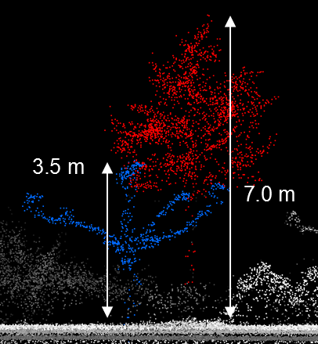
Figure 2.6: Cross-section view of two detected trees. The left tree would not be detected if the parameter "Min height" were larger than 3.5 m.
Require¶
This parameter defines the minimum number of points which are required to form a group (i.e. a tree). The default value is 20 points, which is very low in light of the high density of the dataset we used. Probably, the default value is meant to be used with point clouds having a one order of magnitude smaller density.
In our analysis, we tested the following values: 20 (default), 50, 200, 1000, 2000, 4000, 6000.
2.2.2 Trunk method parameters¶
Group planar surfaces¶
See here.
Min Height¶
Same role as in the watershed method, see here.
Max diameter¶
This parameter defines the maximum diameter (in meters) which a group of points identified as trunk can reach. Default value is 0.6 meters. Knowing that
- very few trees of the ICA exceed this value;
- yet, older trees can exhibit larger diameters,
we used the following values: 0.20, 0.30, 0.40, 0.60 (default), 0.80, 1.00, 1.50 meters.
Min trunk¶
This parameter defines a minimum threshold on the length of tree trunks. Default value is 2 m. We tested the following values: 0.50, 1.00, 1.50, 2.00 (default), 2.50, 3.00, 4.00, 5.00 meters.
Group by density¶
Quoting the official documentation,
If on, points are grouped based on their distance to each other. Close-by points get the same group number.
Gap¶
Quoting the official documentation,
Distance between consecutive groups:
Automatic: the software decides what points belong to one group or to another. This is recommended for objects with variable gaps, such as moving objects on a road.
User fixed: the user can define a fixed distance value in the text field. This is suited for fixed objects with large distances in between, such as powerline towers.
We did not attempt the optimization of this parameter but kept the default value [WHICH VALUE?].
2.2.3 Visualizing results¶
Terrascan allows the user to visualize the outcome of the tree segmentation straight from within the Graphical User Interface. Points belonging to the same group (i.e. to the same tree) are assigned the same random color, which allows the user to perform intuitive, quick, qualitative in-app assessments. An example is provided in Figure 2.7.
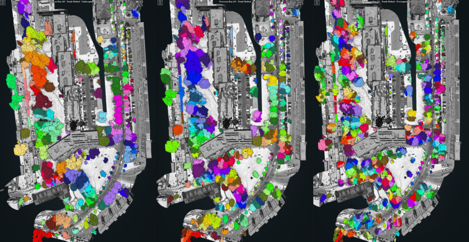
Figure 2.7: Three examples of tree segmentations. From a qualitative point of view, we can acknowledge that the leftmost (rightmost) example is affected by undersegmentation (oversegmentation). The example in the middle seems to be a good compromise.
2.2.4 Exporting results¶
As already said, Terrascan takes point clouds as input data and can run algorithms which form group out of these points, each group corresponding to an individual tree. A host of "features" (or "measurements"/ "attributes"/...) are generated for each group, which the user can export to text files using the "Write group info" command. The set of exported features can be customized through a dedicated configuration panel which can be found within the software settings ("File formats / User group formats").
The list and documentation of all the exportable features can be found here. Let us note that
- depending on the segmentation method, not all the features can be populated;
- multiple geolocation information can exist.
The following table summarizes the features which the watershed and trunk methods can export:
| Feature | Watershed Method | Trunk Method |
|---|---|---|
| Group ID | Yes | Yes |
| Point Count | Yes | Yes |
| Average XY Coordinates | Yes | Yes |
| Ground Z at Avg. XY | Yes | Yes |
| Trunk XY | No | Yes |
| Ground Z at Trunk XY | No | Yes |
| Trunk Diameter | See here below | See here below |
| Canopy Width | Yes | Yes |
| Biggest Distance above Ground (Max. Height) | Yes | Yes |
| Smallest Distance above Ground | Yes | Yes |
| Length | Yes | Yes |
| Width | Yes | Yes |
| Height | Yes | Yes |
2.2.5 Trunk Diameters¶
Terrascan integrates a functionality allowing users to measure trunk diameters (see Figure 2.8).
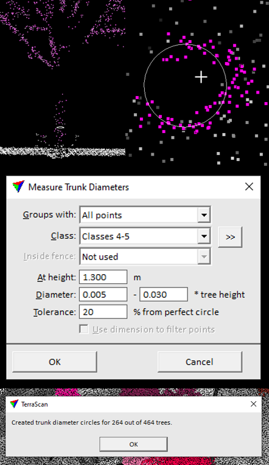
Figure 2.8: Screenshots of the trunk diameter measurement function.
Let us note that the measurement of trunk diameters can be feasible or not, depending on the number of points which sample a given trunk.
We performed some rapid experiments, which showed that some diameters could actually be estimated, given the high density of the point cloud we used (cf. here). Still, we did not analyzed the reliability of such estimations against reference/ground truth data.
2.3 Running DFT¶
As already said, DFT consists of a collection of functions which can be run either with Octave or MATLAB. The former software was used in the frame of this context. A few custom Octave scripts were written to automatize the exploration of the parameter space.
Our preliminary, warm-up tests showed that we could not obtain satisfactory results by using the "tree top detection method" (cf. here). Indeed, upon using this method the F1-score topped at around 40%. Therefore, we devoted our efforts to exploring the parameter space of the other available method, namely the "tree stem detection method" (cf. this tutorial). In the following, we provide a brief description of the various parameters involved in such a detection method.
2.3.2 Parameters concerned by the tree stem detection method¶
Quoting the official tutorial,
The stem detection algorithm uses the planimetric coordinates and height of the points above ground as an input.
To compute the height, DFT provides a function called elevationModels, which takes the classified 3D point cloud as input, as well as some parameters. Regarding these parameters, we stuck to the values suggested by the official tutorial, except for
- the
cellSizeparameter (= size of the raster cells) which was set to 0.8 (meters); - the
searchRadiusparameter which was set to 10 (meters).
Once that each point is assigned an height above the ground, the actual tree stem detection algorithm can be invoked (treeStems DFT function, cf. DFT Tree Stem Detection Tutorial / Step 4 - Detect the stems), which takes a host of parameters. While referring the reader to the official tutorial for the definition of these parameters, we provide the list of values we used (unit = meters):
| Parameter | Value |
|---|---|
cellSize |
0.9 |
bandWidth |
0.7 |
verticalStep |
0.15 |
searchRadius |
from 1 to 6, step = 0.5 |
minLength |
from 1 to 6, step = 0.5 |
searchRadius (minLength) was fixed to 4 (meters) when minLength (searchRadius) was let vary between 1 and 6 meters.
2.3.3 Visualizing results¶
DFT does not include any specific Graphical User Interface. Still, users can rely on Octave/MATLAB to generate plots, something useful and clever especially when performing analysis in an interactive way. In our case, DFT was used in a non-interactive way and visualisation was delayed until the assessment step, which we describe in Section 2.4.
2.3.4 Exporting results¶
Thanks to the vast Octave/MATLAB ecosystem, DFT results can be output to disk in several ways and using data formats. More specifically, we used the ESRI Shapefile file format to export the average (x, y) coordinates of the detected stems/peaks.
2.3.5 Trunk diameters¶
This feature is missing in DFT.
2.4 Post-processing: assessment algorithm and metrics computation¶
As already said, the STDL used a couple of third-party tools, namely TerraScan and the Digital Forestry Toolbox (DFT), in order to detect trees from point clouds. Both tools can output
- a segmented point cloud, in which points associated to the same tree are assigned the same identifier;
-
one (X, Y, Z) triplet per detected tree, where the X, Y and Z (optional) coordinates are
-
computed either as the centroid of all the points which get associated to a given tree, or - under some conditions - as the centroid of the trunk only;
- expressed in the same reference system as the input point cloud.
As the ground truth data the STDL was provided with take the form of one (X', Y') pair per tree, with Z' implicitly equal to 1 meter above the ground, the comparison between detections and ground truth trees could only be performed on the common ground of 2D space. In other words, we could not assess the 3D point clouds segmentations obtained by either TerraScan or DFT against reference/ground truth segmentations in the 3D space.
The problem which needed to be solved amounts to finding matching and unmatching items between two sets of 2D points:
- a 1st set including the (X', Y') coordinates of ground truth trees;
- a 2nd set including the (X, Y) coordinates of detected trees.
In order to fulfill the requirement of a 1 meter accuracy which was set by the beneficiaries of this project, the following matching rule was adopted:
a detection (D) matches a ground truth tree (GT) (and vice versa) if and only if the Cartesian distance between D and GT is less or equal to 1 meter
Figure 2.9 shows how such a rule would allow one to tag
- detections as either True Positives (TPs) or False Positives (FPs)
- ground truth trees as either True Positives (TPs) or False Negatives (FNs)
in the most trivial case.

Figure 2.9: Tagging as True Positive (TP), False Positive (FP), False Negative (FN) ground truth and detected trees in the most trivial case.
Actually, far less trivial cases can arise, such as the one illustrated in Figure 2.10.
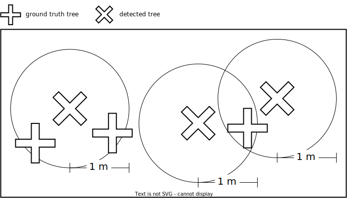
Figure 2.10: Only one detection can exist for two candidate ground truth trees, or else two detections can exist for only one candidate ground truth tree.
The STDL designed and implemented an algorithm, which would produce relevant TP, FP, FN tags and counts even in such more complex cases. For instance, in a setting like the one in the image here above, one would expect the algorithm to count 2 TPs, 1 FP, 1 FN.
Details are provided here below.
2.4.1 The tagging and counting algorithm¶
1st step: geohash detections and ground truth trees¶
In order to keep track of the various detections and ground truth trees all along the execution of the assessment algorithm, each item is given a unique identifier, computed as the geohash of its coordinates, using the pygeohash Python module. Such identifier is not only unique (as far as a sufficiently high precision is used), but also stable across subsequent executions. The latter property allows analysts to "synchronise" the concerned objects between the output of the (Python) code and the views generated with GIS tools such as QGIS, which turns out to be quite useful especially at development and debugging time.
2nd step: convert point detections to circles¶
As a 2nd step, each detection is converted to a circle,
- centered on the (X, Y) coordinates of the detection;
- having a 1 m radius.
This operation can be accomplished by generating a 1 m buffer around each detection. For the sake of precision, this method was used, which generates a polygonal surface approximating the intended circle.
3rd step: perform left and right outer spatial joins¶
As a 3rd step, the following two spatial joins are computed:
-
left outer join between the circles generated at the previous step and ground truth trees;
-
right outer join between the same two operands.
In both cases, the "intersects" operation is used (cf. this page for more technical details).
4th step: tag trivial False Positives and False Negatives¶
All those detections output by the left outer join for which no right attribute exists (in particular, we focus on the right geohash) can trivially be tagged as FPs. As a matter of fact, this means that the 1 m circular buffer surrounding the detection does not intersect any ground truth tree; in other words, that no ground truth tree can be found within 1 m from the detection. The same reasoning leads to trivially tagging as FNs all those ground truth trees output by the right outer join for which no left attribute exists. These cases correspond to the two rightmost items in Fig. 6.1.
For reasons which will be clarified here below, the algorithm does not actually tag items as either FPs or FNs; instead,
- TP and FP "charges" are assigned to detected trees;
- TP and FN charges are assigned to ground truth trees.
Here's how:
- for FP detected trees:
| TP charge | FP charge |
|---|---|
| 0 | 1 |
- for FN ground truth trees:
| TP charge | FN charge |
|---|---|
| 0 | 1 |
5th step: tag non-trivial False Positives and False Negatives¶
The left outer spatial join performed at step 3 establishes relations between each detection and those ground truth trees which are located no further than 1 meter, as shown in Figure 2.11.
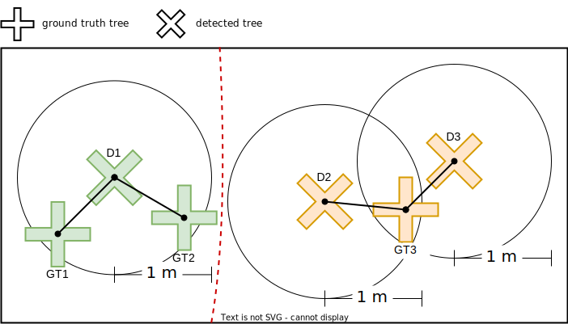
Figure 2.11: The spatial join between buffered detections and ground truth trees establishes relations between groups of items of these two populations. In the sample setting depicted in this picture, two unrelated groups can be found.
The example here above shows 4 relations,
- D1 - GT1,
- D1 - GT2,
- D2 - GT3,
- D3 - GT3
which can be split (see the red dashed line) into two unrelated, independent groups:
- {D1 - GT1, D1 - GT2}
- {D2 - GT3, D3 - GT3}
In order to generate this kind of groups in a programmatic way, the algorithm first builds a graph out of the relations established by the left outer spatial join, then it extracts the connected components of such a graph (cf. this page).
The tagging and counting of TPs, FPs, FNs is performed on a per-group basis, according to the following strategy:
-
if a group contains more ground truth than detected trees, then the group is assigned an excess "FN charge", equal to the difference between the number of ground truth trees and detected trees. This excess charge is then divided by the number of ground truth trees and the result assigned to each of them. For instance, the {D1 - GT1, D1 - GT2} group in the image here above would be assigned an FN charge equal to 1; then, each ground truth tree would be assigned an FN charge equal to 1/2.
-
Similarly, if a group contains more detected trees than ground truth trees, then the group is assigned an excess FP charge, equal to the difference between the number of detected trees and ground truth trees. This excess charge is then divided by the number of detections and the result assigned to each of them. For instance, the {D2 - GT3, D3 - GT3} group in the image here above would be assigned an excess FN charge equal to 1; then, each detection would be assigned an FP charge equal to 1/2.
-
In case the number of ground truth trees be the same as the number of detections, no excess FN/FP charge is assigned to the group.
-
Concerning the assignment of TP charges, the per-group budget is established as the minimum between the number of ground truth and detected trees, then equally split between the items of these two populations. In the example above, both groups would be assigned TP charge = 1.
Wrapping things up, here are the charges which the algorithm would assign to the various items of the example here above:
| item | TP charge | FP charge | Total charge |
|---|---|---|---|
| D1 | 1 | 0 | 1 |
| D2 | 1/2 | 1/2 | 1 |
| D3 | 1/2 | 1/2 | 1 |
| Sum | 2 | 1 | 3 |
| item | TP charge | FN charge | Total charge |
|---|---|---|---|
| GT1 | 1/2 | 1/2 | 1 |
| GT2 | 1/2 | 1/2 | 1 |
| GT3 | 1 | 0 | 1 |
| Sum | 2 | 1 | 3 |
Let us note that:
- the count of TPs yields the same result, whether we consider detections or ground truth trees, which makes sense;
- the "Total charge" column allows one to check the consistency of the algorithm;
- as expected, we obtain 2 FPs, 1 FP, 1 FN;
- the algorithm does not even attempt to establish 1:1 relations, "optimal" in a given sense, between ground truth and detected trees. As a matter of fact, the algorithm is designed to produce meaningful counts and tags only;
- of course, the algorithm also works in far more complex settings than the one depicted in Figs. 6.2 and 6.3.
2.4.2 From counts to metrics¶
TP, FP, FN counts are extensive properties, out of which we can compute some standard metrics such as
- precision
- recall
- F1-score
which are intensive, instead. While referring the reader to this paragraph for the definition of these metrics, let us state the interpretation which holds in the present use case:
- precision is optimal (= 1.0) if and only if (iff) all the detections are matched by ground truth trees (no FPs);
- recall is optimal (= 1.0) iff all the ground truth trees are detected (no FNs).
Typically, one cannot optimize both precision and recall for the same values of a set of parameters. Instead, they can exhibit opposite trends as a function of a given parameter (e.g. precision increases while recall decreases). In such cases, the F1-score would exhibit convexity and could be optimized.
3. Results and discussion¶
Figure 3.1 shows some of the tree detection trials we performed, using Terrascan and DFT. Each trial corresponds to a different set of parameters and is represented either by gray dots or colored diamonds in a precision-recall plot (see the image caption for further details).
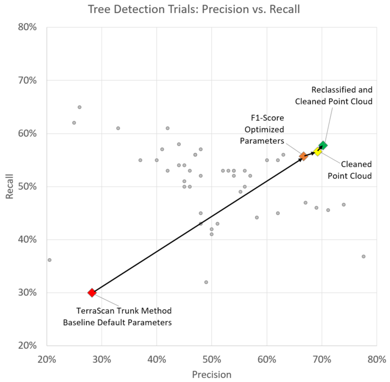
Figure 3.1: Precision vs. Recall of a subset of the tree detections we attempted, using different parameters in Terrascan and DFT. Colored diamonds represent the starting point (red) as well as our "last stops" in the parameter space, with (yellow, green) and without (orange) pre-processing. All the three test sectors are here combined.
Let us note that:
- the DFT parameter space can be conveniently explored by scripting the batch execution of various runs;
- on the contrary, the exploration of the Terrascan parameter space is more laborious, has to be performed manually, trying out one specific set of parameters after another, with repeated manual export of features (including geographical coordinates) in between. Indeed, although Terrascan let users define macros, unfortunately the "Write Group Info" command cannot be used in macros;
- in both cases, the parameter space was explored in quite an heuristic and partial way;
- we aimed at optimizing the F1-score all sectors combined.
More detailed comments follow, concerning the best trials made with Terrascan and DFT.
3.1 The best trial made with Terrascan¶
Among the trials we ran with Terrascan, the one which yielded the best F1-score was obtained using the following parameters:
| Parameter | Value |
|---|---|
| Method / Algorithm | Trunk |
| Classes | 4+5, cleaned and reclassified |
| Group planar surfaces | Off |
| Min height | 3.00 m |
| Max diameter | 0.40 m |
| Min trunk | 3.00 m |
| Group by density | On |
| Gap | Auto |
| Require | 1500 pts |
This trial corresponds to the green diamond shown in Figure 3.1.
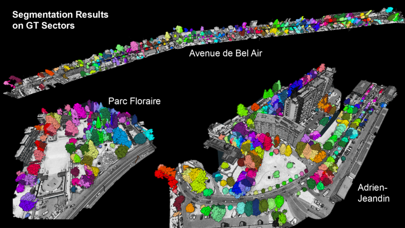
Figure 3.2: Test sectors as segmented by the best trial made with Terrascan.
Figure 3.2 provides a view of the outcome on the three test sectors. Metrics read as follows:
| Sector | TP | FP | FN | Detectable (TP+FN) | Precision | Recall | F1-Score |
|---|---|---|---|---|---|---|---|
| Global | 323 | 137 | 234 | 557 | 70.2% | 58.0% | 63.5% |
| Adrien-Jeandin | 177 | 69 | 160 | 337 | 72.0% | 52.5% | 60.7% |
| Bel-Air | 114 | 15 | 11 | 125 | 88.4% | 91.2% | 89.8% |
| Floraire | 32 | 53 | 63 | 89 | 37.6% | 33.7% | 35.6% |
Figure 3.3 provides a graphical representation of the same findings, with the addition of the metrics we computed before cleaning and reclassifying the LiDAR point cloud.
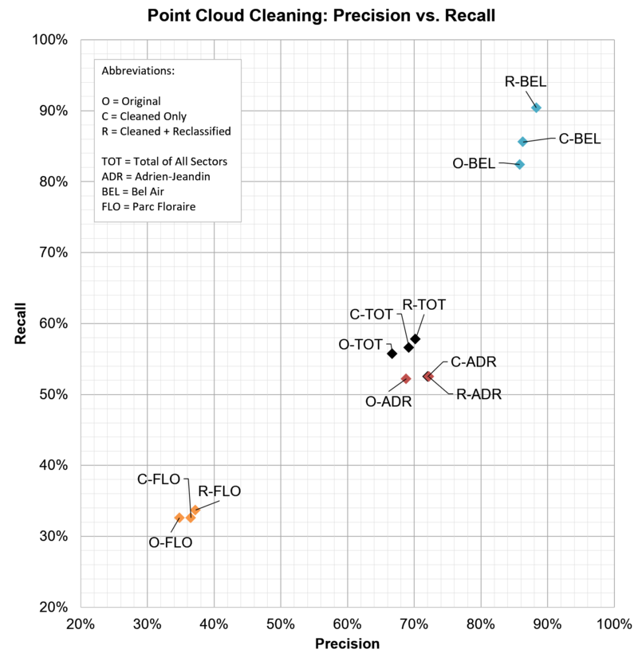
Figure 3.3: Cleaning and reclassifying the point cloud has a positive influence on precision and recall, although modest.
Our results confirm that the tree detection task is more or less hard depending on the sector at hand. Without any surprise, we acknowledge that:
- the "Avenue de Bel-Air" test sector (BEL), enjoying an alley of well-separated trees, is easily tackled by Terrascan. Quite decent precision and recall are obtained.
- In contrast, the "Parc Floraire" test sector (FLO) turns out to be the hardest one, given the vegetation density and heterogeneity.
- The "Adrien-Jeandin" (ADR) is actually a mix of dense and sparse contexts and turns out to be a good proxy for the global performance.
Cleaning and Reclassification have a benificial impact on Precision and Recall for all sectors as well as the global context (TOT). While for BEL mainly Recall profited from preprocessing, ADR and FLO showed a stronger increase in Precision. For the global context both, Precision and Recall, could be increased slighty.
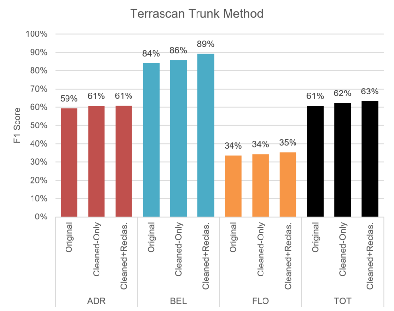
Figure 3.4: The F1-score attained by our best Terrascan trial.
Figure 3.4 shows how our best Terrascan trial performed in terms of F1-score: globally, on a per-sector basis; with and without pre-processing.
We can notice that pre-processing slightly improves the F1-score for the global context as well as for the individual sectors. The largest impact was observed for the Bel-Air sector, especially for preprocessing including Reclassification.
3.2 The best trial made with DFT¶
The DFT trial yielding the highest global F1-score was obtained using the stem detection method and the following parameters:
| Parameter | Value |
|---|---|
| Method / Algorithm | Stem detection |
| Classes | 4+5, cleaned and reclassified |
| Search radius | 4.00 |
| Minimum length | 4.00 |
Here's a summary of the resulting metrics:
| Sector | Precision | Recall | F1-score |
|---|---|---|---|
| Adrien-Jeandin | 75.4% | 36.5% | 49.2% |
| Bel-Air | 88.0% | 82.4% | 85.1% |
| Floraire | 47.9% | 36.8% | 41.7% |
| Global | 74.0% | 46.6% | 57.2% |
Similar comments to those formulated here apply: the "Avenue de Bel-Air" sector remains the easiest to process; "Parc Floraire" the hardest. However, here we acknowledge a bigger gap between the global F1-score and the F1-score related to the "Adrien-Jeandin" test sector.
Figure 3.5 shows how our best DFT trial performed in terms of F1-score: globally, on a per-sector basis; with and without pre-processing. We can notice that the impact of point cloud reclassification can be slightly positive or negative depending on the test sector.
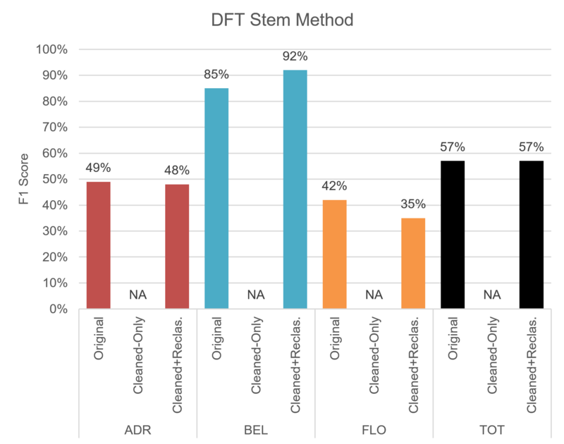
Figure 3.5: The F1-score attained by our best DFT trial.
3.3 Comparison: Terrascan vs. DFT¶
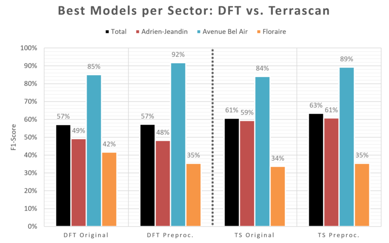
Figure 3.6: Comparison of Terrascan and DFT in terms of F1-score.
The comparison of the best Terrascan trial vs. the best DFT trial in terms of F1-score shows that there is no clear winner (see Figure 3.6). Still, we can notice that:
- DFT reaches the best F1-score ever in the "Parc Floraire" ("Avenue de Bel-Air") sector, without (with) pre-processing.
- Terrascan performs slightly better on global scores and substantially better on the mixed context of the Adrien-Jeandin sector,especially after pre-processing.
3.4 Trials with standard-density datasets¶
In addition to applying our method to the 2021 high-density (HD) LiDAR dataset, we also tried using two other datasets exhibiting a by far more standard point density (20-30 pt/m²):
The goal was twofold:
- finding evidence for the added value of high-density (HD) datasets, despite their higher cost;
- checking whether the parameters which turned out to yield optimal scores with HD LiDAR data could also yield acceptable results if used with standard-density (SD) datasets.
Concerning the 1st point, lower point densities make the "trunk method" unreliable (if not completely unusable). In Figure 3.7, we report results obtained with the watershed method, along with results related to the best performing trials obtained with the 2021 HD dataset. The scores we obtained with the SD dataset are far below the best we obtained with the HD dataset, confirming the interest of high-density acquisitions.
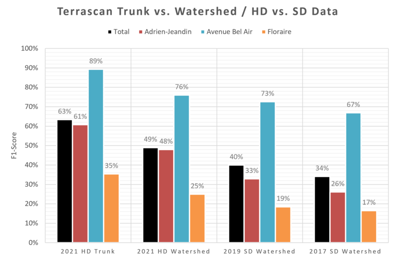
Figure 3.7: Comparison of F1-scores of the best performing trials. Parameters were optimized for each model individually.
Concerning the 2nd point, without any surprise we confirmed that parameters must be re-optimized for SD datasets. The usage of the set of parameters which were optimized on the basis of the HD dataset yielded poor results, as shown in Figure 3.8.
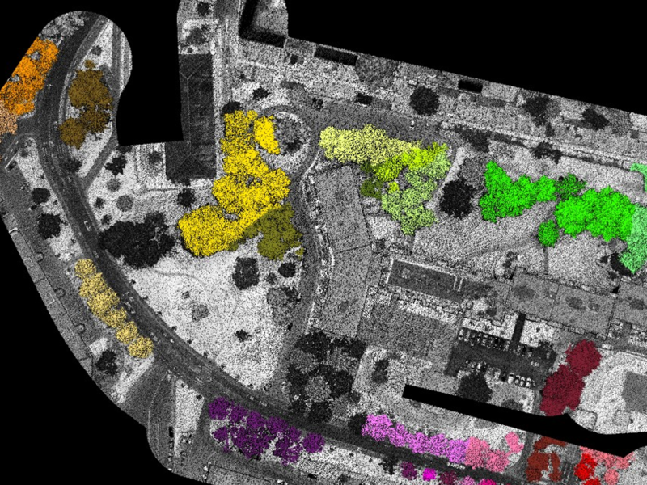
Figure 3.8: Using the parameters which were optimized for the high-density dataset leads to poor results (strong under-segmentation) on SD datasets. In accordance with the TS documentation we can see that the trunk method is unusable for lower and medium density datasets.
The watershed algorithm produces a more realistic segmentation pattern on the SD dataset but still cannot reach the performance levels of the trunk or the watershed method on the HD dataset. After optimizing parameters, we could obtain quite decent results though (see Figure 3.9).
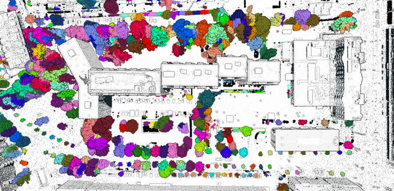
Figure 3.9: After a dataset-specific parameter optimization, convincing results can be achieved on the medium-density 2019 dataset (Terrascan's watershed method was used).
3.5 Tree detection over the full 2021 high-density LiDAR dataset¶
Clearly, from a computational point of view processing large point cloud dataset is not the same as processing small datasets. Given the extremely high density of the 2021 LiDAR datasets, we wanted to check whether and how Terrascan could handle such a resource-intensive task. Thanks to Terrascan's macro actions, one can split the task into a set of smaller sub-tasks, each sub-task dealing with a "tile" of the full dataset. Additionally, Terrascan integrates quite a smart feature, which automatically merges groups of points (i.e. trees) spanning multiple tiles.
Figure 3.10 provides a static view of the results we obtained, using the parameters which globally performed the best on the three sectors. We refer the reader to this Potree viewer (kindly hosted by the Géoportail du SITN) for an interactive view.
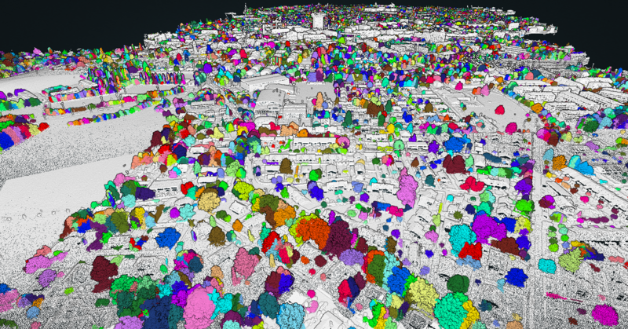
Figure 3.10: Result of the application of the best performing Terrascan parameters to the full dataset.
4. Conclusion and outlook¶
Despite all the efforts documented here above, the results we obtained are not as satisfactory as expected. Indeed, the metrics we managed to attain all sectors combined indicate that tree detections are neither reliable (low precision) nor exhaustive (low recall). Still, we think that results may be improved by further developing some ideas, which we sketch in the following.
4.1 Further the DFT parameter space exploration¶
We devoted much more time to exploring Terrascan's parameter space than DFT's. Indeed, as already stated here, we only explored the two parameters searchRadius and minLenght. Other parameters such as cellSize, bandwidth and verticalStep were not explored at all (we kept default values). We think it is definitely worth exploring these other parameters, too.
Moreover,
- we did not try feeding all the LiDAR returns to the stem detection method, we only used the last returns. It is surely worth checking whether the usage of the other returns could be beneficial.
- Upon using the peak detection method, we did not manage to reach a better F1-score than ~40%, as opposed to the 57% obtained with the stem detection method. However, the peak detection method is particularly interesting because it can also delimit canopies. Hence, it may be worth trying to improve the F1-score, for instance by tuning the parameters of the power law equation relating the crown radius to the tree height (cf. here).
4.2 Exploit contextual information¶
We showed that the algorithms implemented by TerraScan and DFT yield much better results in sparse contexts (ex.: the "Avenue de Bel-Air" test sector) than in dense ones (ex.: the "Parc Floraire" test sector). This means that precision may be improved (at the expense of recall, though) if one could restrain the tree detection to sparse contexts only, either as a pre- or post-processing step. We can think of at least a couple of methods which would allow one to (semi-)automatically tell sparse from dense contexts:
-
intrinsic method: after segmenting the point cloud into individual trees, one could analyze how close (far) each individual is to (from) the nearest neighbor and estimate the density of trees on some 2D or 3D grid;
-
extrinsic method: territorial data exist (see for instance the dataset "Carte de couverture du sol selon classification OTEMO" distributed by the SITG), providing information about urban planning and land use (e.g. roads, parks, sidewalks, etc.). These data may be analyzed in order to extract hints on how likely it is for a tree to be in close proximity with another, according to its position.
4.3 Combine detections stemming from two or more independent trials¶
Detections coming from two or more independent trials (obtained with different software or else with the same software but different parameters) could be combined in order to improve either precision or recall:
-
recall would be improved (i.e. the number of false negatives would be reduced) if detections coming from multiple trials were merged. In order to prevent double counting, two or more detections coming from two or more sources could be counted as just one if they were found within a given distance from each other. The algorithm would follow along similar lines as the ones which led us to the "tagging and counting algorithm" presented here above;
-
precision would be improved (i.e. the number of false positives would be reduced) if we considered only those detections for which a consensus could be established among two or more trials, and discarded the rest. A distance-based criterion could be used to establish such consensus, along similar lines as those leading to our "tagging and counting algorithm".
4.4 Use generic point cloud segmentation algorithms¶
Generic (i.e. not tailored for tree detection) clustering algorithms exist, such as DBSCAN ("Density-Based Spatial Clustering of Applications with Noise", see e.g. here), which could be used to segment a LiDAR point cloud into individual trees. We think it would be worth giving these algorithms a try!
4.5 Use Machine Learning¶
The segmentation algorithms we used in this project do not rely on Machine Learning. Yet, alternative/complementary approaches might me investigated, in which a point cloud segmentation model would be first trained on reference data, then used to infer tree segmentations within a given area of interest. For instance, it would be tempting to test this Deep Learning model published by ESRI and usable with their ArcGIS Pro software. It would be also worth deep diving into this research paper and try replicating the proposed methodology. Regarding training data, we could generate a ground truth dataset by
- using our best TerraScan/DFT model to segment the 3D point cloud;
- using 2D ground truth data to filter out wrong segmentations.
5. Other resources¶
The work documented here was the object of a Forum SITG which took place online on March 29, 2022. Videos and presentation materials can be found here.
6. Acknowledgements¶
This project was made possible thanks to a tight collaboration between the STDL team and some experts of the Canton of Neuchâtel (NE), the Canton of Geneva (GE), the Conservatoire et Jardin botaniques de la Ville de Genève (CJBG) and the University of Geneva (UNIGE). The STDL team acknowledges key contributions from Marc Riedo (SITN, NE), Bertrand Favre (OCAN, GE), Nicolas Wyler (CJBG) and Gregory Giuliani (UNIGE). We also wish to warmly thank Matthew Parkan for developing, maintaining and advising us on the Digital Forestry Toolbox.